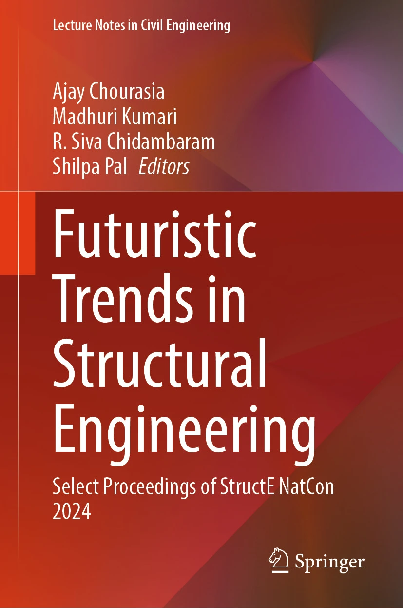
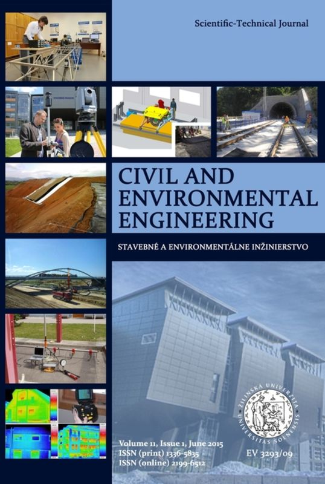
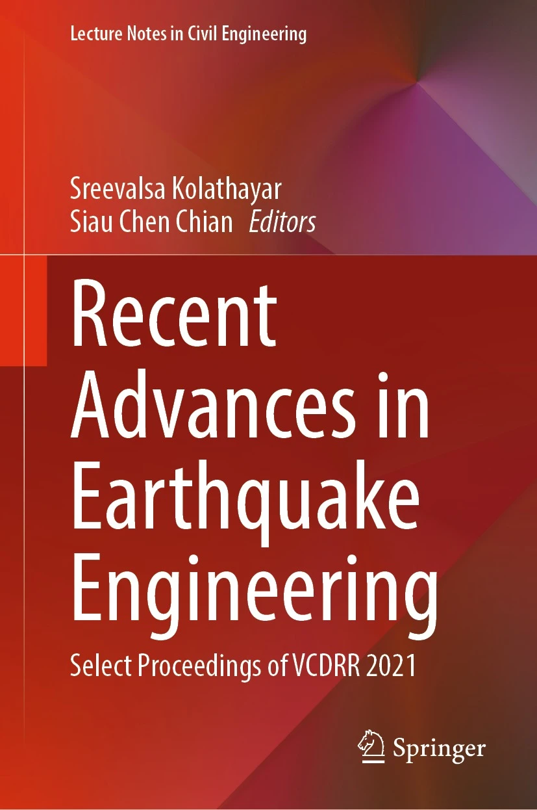

Rajat Abhay Sirsikar
I like to design structures, share research, and build computational tools and technologies


My publications (reversed chronological order). For the most up-to-date list, visit my Google Scholar profile.


